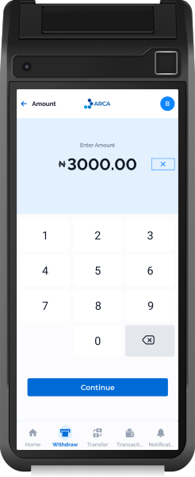
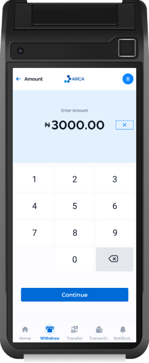
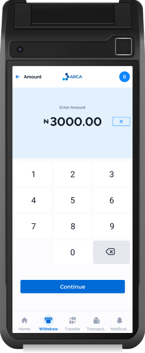

Arca POS
Our Point of Sale (POS) Solutions ensure smooth payment
possibilities without fumbling with cash. It is the easy, fast and
convenient solution that your organisation needs.
 

Our Point of Sale (POS) Solutions ensure smooth payment
possibilities without fumbling with cash. It is the easy, fast and
convenient solution that your organisation needs.

At Arca, we understand that every business is unique. That is why we have built a system that provides the ideal payment experience characterised by speed and convenience. We provide POS systems for financial institutions that have merchants. These institutions use our POS products to help merchants perform transactions through our terminals.
Our certified terminals include the WPOS which is also referred to as the standard POS hardware and MPOS which is the Mobile POS. While the Standard POS operates as an independent system, the MPOS enables smartphones and tablets to accept payments. The transaction is completed through the mobile device which is connected to a card reader
Arca POS is available for use for Financial Institutions e.g. Commercial banks,
Microfinance banks, churches, hospitals, schools and fintechs.